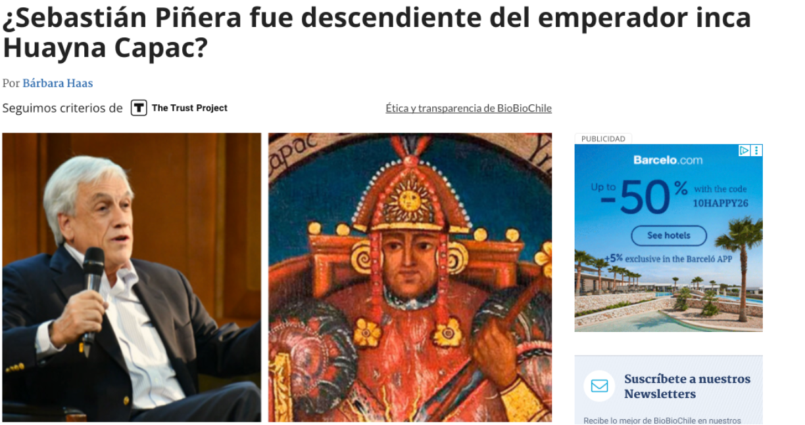
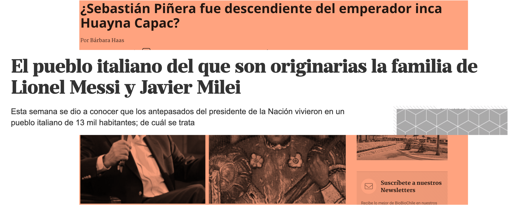
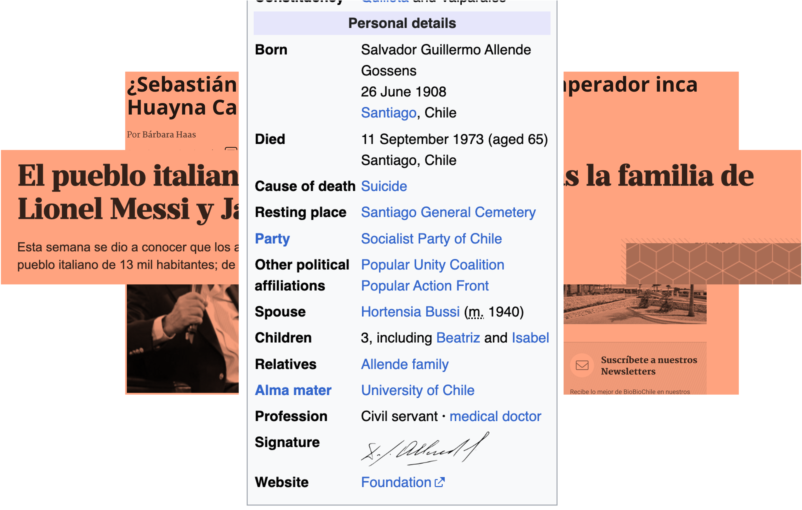
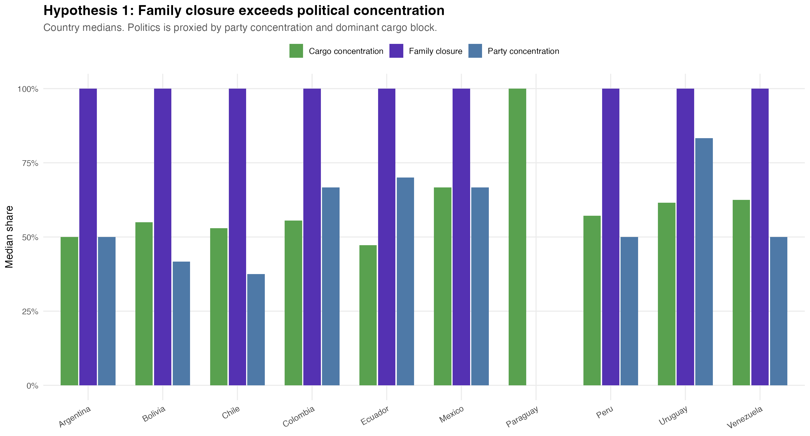
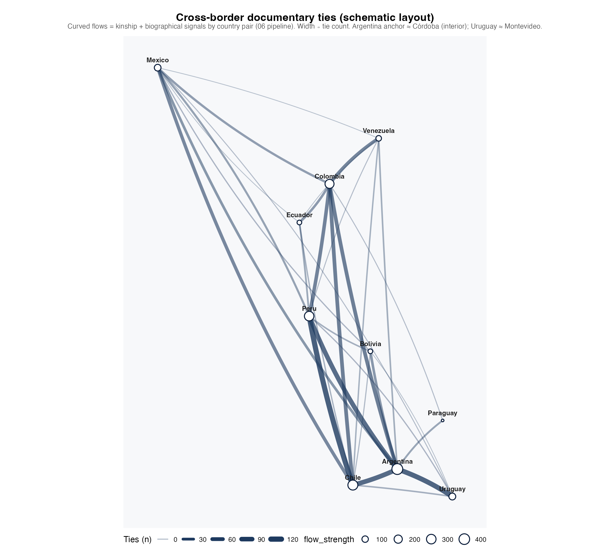
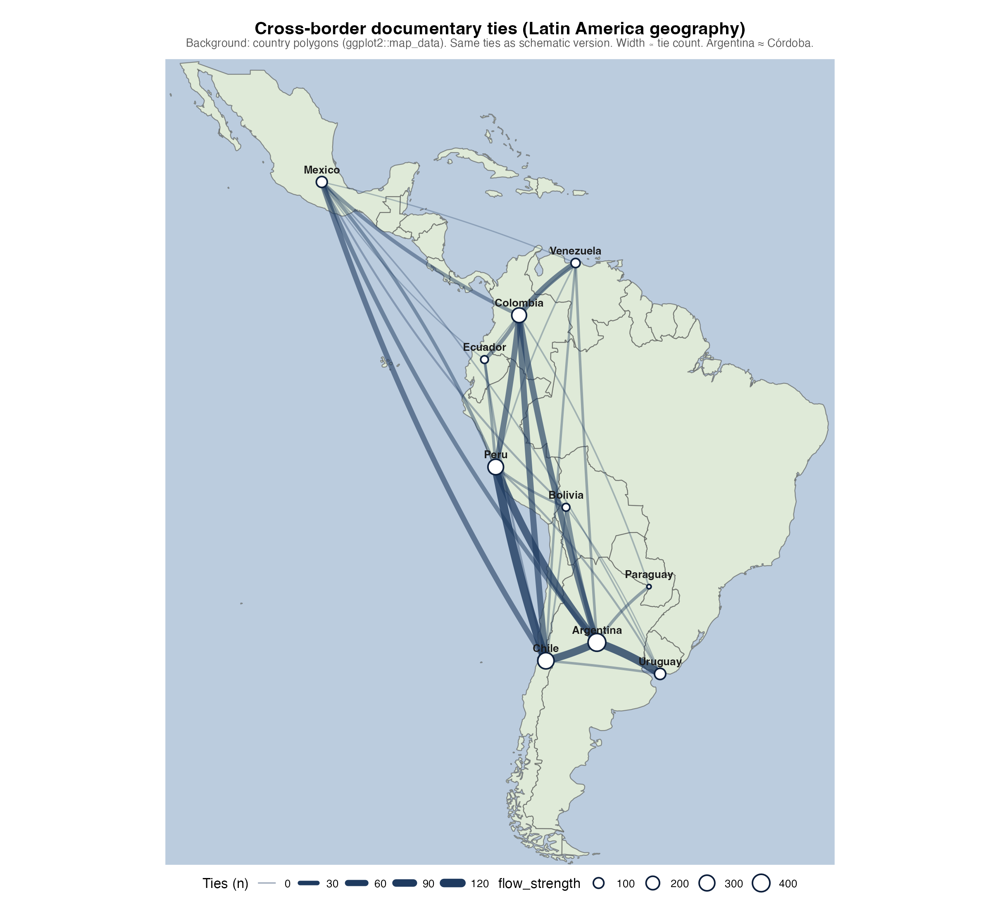

Elite Family Networks in Latin America
Evidence from Wikipedia Genealogical Data, 19th–21st Centuries
2026-04-01
Me

The Central Question
Do elite family networks structure political power reproduction in Latin America — and can we measure this at scale?
- Classical elite theory: circulation vs. closure
- Empirical evidence at scale: scarce
- Prosopographical reconstruction: labor-intensive, rarely cross-national
This paper: Wikipedia genealogical data as a computational social science resource

Piñera family — repeated elite surnames across Chilean politics
Surnames as Elite Markers?
The sociological claim:
In Latin America, surnames function as social capital certificates — encoding lineage, alliances, and institutional access across generations
- Balmori, Voss & Wortman (1984): familias notables as unit of analysis
- Bourdieu (1996): social reproduction through symbolic capital
- Centeno (2002): elite networks and state formation
The computational opportunity:
Wikipedia infoboxes encode kinship ties at scale — and we can extract them

Cross-national elite connections: Chile–Argentina
The Extended Network

Elite kinship extending across political factions and historical periods — the same surnames reappear
Data & Pipeline
Source: Spanish-language Wikipedia (es.wikipedia.org)
Extraction: Infobox fields per person - cónyuge, padres, hijos, pareja, hermanos - partido_político, educación - predecesor, sucesor - Biographical text (first paragraph)
Coverage: - 10 countries: ARG, BOL, CHL, COL, ECU, MEX, PRY, PER, URY, VEN - 6,169 individuals after deduplication - 8,201 matched kinship edges (57.8% resolution rate) - 92.9% have parsed birth year
Processing pipeline: Wikipedia scraping ↓ 00_consolidar_familias.R ↓ _CONSOLIDADO_familias_latam.csv ↓ 02_leer_data.R → personas.rds relaciones.rds partidos.rds educacion.rds sucesiones.rds ↓ Network construction (igraph) ↓ Centrality + community detection
Two Key Conceptual Distinctions
① Closure–Reach Trade-off
Families that maximize endogamy (closure) sacrifice bridging ties for transnational coordination. Families that maximize cross-border reach exhibit lower endogamy. These are alternative strategies, not complementary ones.
② Documentary Elite Field
Wikipedia encodes the stratum of families that successfully inscribed themselves in public digital archives. This is the object we analyze — its boundaries are a sociological datum, not merely a sampling limitation.
We study who gets linked, not who actually ruled.
Four Hypotheses
| Hypothesis | Mechanism | |
|---|---|---|
| H1 | Family closure ↔︎ political concentration | Marriage market as political institution |
| H2 | Network topology ↔︎ regime type | Chain=patrimonial; Star=founding lineage; Web=oligarchy |
| H3 | Transnational ties follow Pacific–Andean corridor | Colonial administrative geography |
| H4 | Betweenness centrality = structural brokerage | Multiplex positioning across kinship + institutions |
H2: Family Networks by Country

Node size = degree centrality. Color = family surname cluster. Each panel = one national kinship subgraph (Fruchterman-Reingold layout).
H2: Chile Interfamily (Animated)

Animated reveal of Chile interfamily elite ties. Highlighted labels are top families by degree centrality.
H2: Argentina Interfamily (Animated)

Animated reveal of Argentina elite kinship ties (same style as Chile). Highlighted labels follow the same degree-centrality rule.
H2: Mexico Interfamily (Animated)

Animated reveal of Mexico elite kinship ties (same style as Chile). Highlighted labels follow the same degree-centrality rule.
H2: Four Topology Types
- Chain → Paraguay
-
López dynasty. Near-linear structure. Weber’s patrimonialism.
- Star → Chile, Peru
-
One super-hub (Balmaceda, colonial founding ancestor). Legitimacy through genealogy.
- Dense Web → Argentina, Colombia, Mexico
-
Multiple high-degree nodes. Competitive oligarchy. Rotation among peer families.
- Fragmented Clusters → Bolivia, Venezuela, Ecuador
-
Isolated sub-networks. Regional caciquismo. Weak national elite integration.
Interpretive claim: Topology is not an artifact of corpus size — Paraguay’s chain emerges from n=21, the smallest corpus. Bolivia and Ecuador fragment despite similar sizes. The pattern is structural.
H1: Endogamy Rates by Country
| Country | Marriages | Endogamy rate | Transnational rate |
|---|---|---|---|
| Paraguay | 4 | 1.000 | 0.000 |
| Ecuador | 10 | 0.900 | 0.200 |
| Mexico | 108 | 0.870 | 0.139 |
| Argentina | 177 | 0.864 | 0.203 |
| Venezuela | 25 | 0.840 | 0.200 |
| Chile | 251 | 0.837 | 0.092 |
| Colombia | 151 | 0.795 | 0.086 |
| Uruguay | 18 | 0.778 | 0.389 |
| Peru | 104 | 0.769 | 0.115 |
| Bolivia | 3 | 0.667 | 0.667 |
Key findings:
- Large political elites (Chile n=251, Argentina n=177) have lower endogamy
- Uruguay: smallest elite, highest transnational rate (38.9%)
- Paraguay: maximum closure = maximum political concentration
The counter-intuitive result: More connected families are less endogamous
H1: The Closure–Reach Trade-off

Corr(degree, closure): MEX −0.797 | VEN −0.764 | ARG −0.738 | PER −0.720 | CHL −0.536 | COL −0.478. All negative, all large-n countries.
H1: Mechanism
The structural logic: In competitive oligarchic settings, access to state resources — contracts, appointments, fiscal transfers — required coalition partners drawn from outside one’s own surname cluster.
Endogamy is a luxury of the politically marginal: families secure in their economic base (hacienda, mining, Church patronage) can forgo brokerage rents. High-degree families in our corpus are disproportionately political families — presidents, ministers, generals — whose positions required permanent negotiation with rival lineages.
This is the Padgett & Ansell (1993) logic applied to marriage markets: “robust action” requires not over-committing to any single faction.
Critical distinction:
Corr(degree, closure)strongly negative → marriage strategy drives reachCorr(betweenness, closure)much weaker → institutional brokerage is independent of matrimonial closure
Two routes to elite power; two different network signatures.
H3: Transnational Corridors
Top country pairs (kinship + biographical):
| Pair | Kin | Bio | Total |
|---|---|---|---|
| Chile → Peru | 36 | 81 | 117 |
| Argentina → Uruguay | 46 | 59 | 105 |
| Argentina → Chile | 56 | 38 | 94 |
| Argentina → Peru | 31 | 59 | 90 |
| Argentina → Colombia | 30 | 27 | 57 |
| Chile → Colombia | 43 | 14 | 57 |
Absent: Argentina–Brazil (despite geographic scale)
The decomposition matters:
- Chile–Peru: 69% biographical → diplomatic/institutional
- Argentina–Chile: 60% kinship → genealogical entanglement
- Argentina–Uruguay: mixed → Rioplatense cultural field
Not geography — colonial administrative units structure the corridor
H3: Transnational Network

Edge width = total cross-border ties (kinship + biographical signals). Pacific–Andean corridor dominates. Argentina–Brazil absent.
H3: Flow maps — schematic vs. geography

Left: schematic (plain background). Same tie weights; Argentina ≈ Córdoba.

Right: same ties on a Latin America basemap (ggplot2::map_data).
H3: Multinational Families
| Family | Countries | Members | Geography |
|---|---|---|---|
| Borrero | 4 | 39 | ARG, CHL, COL, ECU |
| Campero | 4 | 24 | ARG, BOL, CHL, PER |
| Ponce de León | 4 | 12 | ARG, MEX, PER, URY |
| Sucre | 4 | 11 | ARG, COL, ECU, VEN |
| Pinto (Chile) | 3 | 50 | ARG, CHL, URY |
| Caicedo | 3 | 48 | CHL, COL, PER |
| Pizarro | 3 | 33 | CHL, COL, PER |
Geographic footprints map onto Bolivarian and Gran-Colombia political geographies — consistent with post-independence elite continuity tied to colonial administrative networks.
H3: Example — bipartite country–family network
Illustrative bipartite graph: countries and multinational families (cross-border elite structure).
H4: Structural Brokers
Top brokers by betweenness centrality in the multiplex graph (kinship + party + university + political succession).
H4: Who Are the Brokers?
| Name | Country | Betweenness |
|---|---|---|
| Luis Felipe Villarán | Peru | 517,714 |
| Walter Humala | Peru | 473,134 |
| Luis Jaime Cisneros | Peru | 391,641 |
| José Evaristo Uriburu | Argentina | 328,970 |
| Pastor Obligado | Argentina | 267,974 |
| Guido Di Tella | Argentina | 240,510 |
| Cuauhtémoc Cárdenas | Mexico | 198,005 |
| Roque Sáenz Peña | Argentina | 168,155 |
Peru dominates — 3 of top 5. Lima’s historical role as Viceregal hub: silver routes, revolutionary circuits, post-war documentation.
Argentina’s Generation of 1880 — Uriburu, Obligado, Sáenz Peña: simultaneously built the state, a party system, and a marriage market in Buenos Aires.
Gender Patterns
Exploratory finding (name-heuristic):
- Women: high degree in kinship-only graph
- Women: lower betweenness in multiplex graph
Lavrin (1990): marriage as alliance
Bourdieu (1996): genealogical visibility ≠ institutional brokerage
Argentina top connectors:
Agustina Ortiz de Rozas, Agustina López de Osornio, Ana Jacoba García de Z., María de los Remedios…
Women = top-degree nodes in kinship graph — but absent from betweenness ranking.
The degree–betweenness split: genealogical connectors vs. institutional brokers.
Competing Explanations
① Wikipedia visibility bias — Concern: High degree = celebrity not structure. Response: Negative Corr(degree, closure) cannot follow from visibility alone. Topology variation across countries uses the same corpus.
② Demographic structure — Concern: Larger countries = denser networks. Response: Chile (dense star) has half Mexico’s population. Paraguay’s chain = n=21, smallest corpus. Size ≠ topology.
③ Random network formation — Concern: Patterns indistinguishable from random. Response: A random graph with Chile’s degree sequence would not produce a star. Star formation requires preferential attachment or founding-lineage mechanism. Future ERGMs can formalize this.
Toward Causal Identification
① Cohort analysis — 92.9% have birth years. Slicing by birth decade tests whether closure–reach trade-off intensified during state consolidation (1833 Chilean Constitution) and relaxed during revolutionary disruptions (1891 Civil War).
② War of the Pacific as natural experiment — 1879–84 exogenous shock to Chilean–Peruvian elite relations. DiD design: Treatment = Chile–Peru edges pre/post-1879. Control = Argentina–Uruguay (no equivalent shock). Test: is biographical-heavy Chile–Peru a post-war documentary artifact?
③ Geographic constraints as instruments — Andes create differential travel costs. City pairs at similar distances but separated by different geographic barriers should show different kinship edge densities — partially identifying the corridor effect.
Broader Implications
Democracy: Where closure and institutional concentration coincide, democratic accountability faces a structural obstacle. The same families occupy political, judicial, educational, and economic positions simultaneously. This is not corruption — it is architecture.
Computational Social Science: Wikipedia genealogical data is an underused resource. 57.8% kinship resolution rate + 92.9% birth year coverage = large-scale prosopography without archival heroism.
Digital Archives: Elite families most densely inscribed in Wikipedia are most vulnerable to network-based accountability journalism. Open genealogical data may paradoxically reinforce elite salience by making visible what previously required archival access.
Summary
What we did:
- Wikipedia kinship scraping, 10 countries
- Multiplex network: kinship + party + university + succession
- 6,169 individuals · 8,201 matched edges
- 4 hypotheses: closure, topology, corridors, brokerage
Two new concepts:
- Closure–reach trade-off
- Documentary elite field
What we found:
- ➕ Gender: degree–betweenness split
Main claim:
Family network structure is not a byproduct of political order in Latin America — it is a constitutive infrastructure of it.
Package

Future Implications
- JSON pipeline exports for reproducibility and interoperability
- LLM-assisted annotation for exploratory coding support
- Open-access dissemination for teaching and replication use
Thank you!
Elite Family Networks in Latin America
Evidence from Wikipedia Genealogical Data
Matías Deneken
PhD Computational Social Science (Accepted)
London School of Economics
8th Annual COMPTEXT Conference 2026 | GitHub: @matdknu